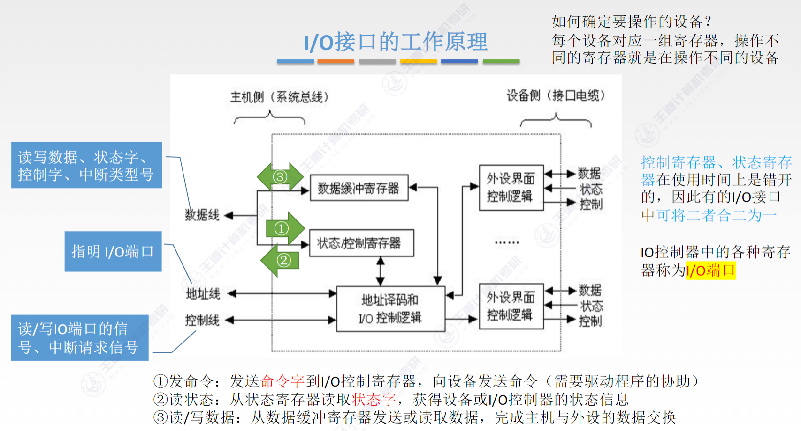
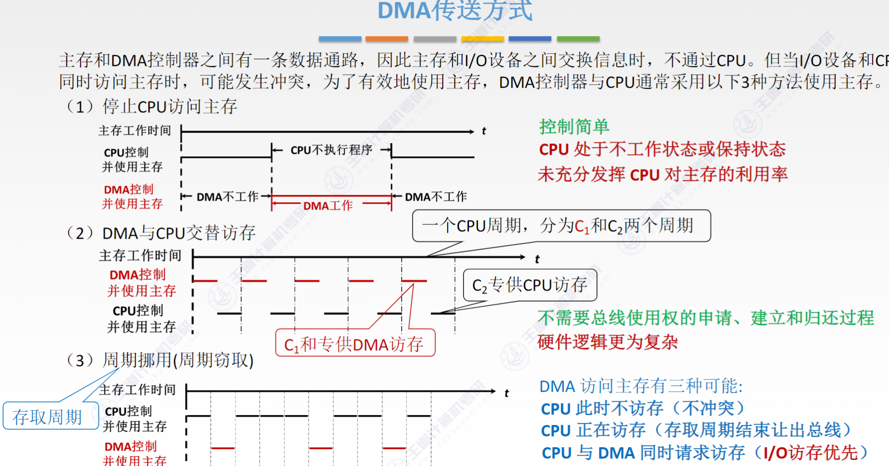

# Ch7 输入 / 输出系统
# I/O 接口
inerrface，主机与外设之间的交接界面
# 功能
- 进行地址译码和设备选择
- 实现主机和外设的通信联络控制
解决时序、工作速度不同的问题 - 实现数据缓冲
- 信号格式的转换
电平转换、并 / 串或串 / 并转换、模 / 数或数 / 模转换 - 传送控制命令和状态信息
CPU 通过接口中的命令寄存器发出启动命令给外设，外设就绪是传回 Ready 状态信息通过接口中的状态寄存器反馈给 CPU
# 基本结构
主机侧通过 I/O 总线与内存、CPU 相连。数据缓冲器用来暂存与 CPU 或内存之间传送的数据信息。状态寄存器用来记录接口和设备的状态信息，控制寄存器用来保存 CPU 对外设的控制信息
状态寄存器和控制寄存器在传送方向是相反的，访问时间上是错开的，所以可以合二为一
数据线传送读 / 写数据、状态信息、控制信息、中断类型号
地址线传送访问 I/O 接口中的寄存器的地址
控制线传送读写控制信号、中断请求、响应信号、仲裁信号、握手信号
I/O 控制逻辑需要对控制寄存器的命令字进行译码，还有收集外设状态到状态寄存器

对上面两个寄存器的访问操作通过 I/O 指令来完成，只能在操作系统内核的底层 I/O 软件中使用，是一种特权指令
# 接口类型
- 按（外设和接口一侧的）数据传送方式：并行接口、串行接口
- 按主机访问 I/O 设备的控制方式：程序查询接口、中断接口、DMA 接口
- 按功能选择的灵活性：可编程接口、不可编程接口
# I/O 端口及其编址
I/O 端口是指 I/O 接口电路中可被 CPU 直接访问的寄存器，主要有数据端口、状态端口和控制端口。
CPU 能对数据端口中的数据进行读 / 写操作，但对状态端口中外设的状态只能读，对控制端口只能写
每个端口对应一个端口地址，编址方式有与存储器独立编址和统一编址两种
- 独立编址
也称 I/O 映射方式，I/O 端口的地址空间与主存地址空间是两个独立的地址空间
需要设置专门的 I/O 指令来表明访问的是 I/O 地址空间，I/O 指令的地址码给出 I/O 端口号
x86 架构中的 IN 和 OUT 指令
IN AL, 0x64 从 I/O 端口 0x64 读取一个字节的数据，存入寄存器 AL
优点：I/O 端口数比主存单元数少得多，秩序少量地址线，使得 I/O 端口译码简单，寻址速度更快。使用专门的 I/O 指令，是程序更加清晰
缺点：I/O 指令少，只提供简单的传输操作，灵活性差。CPU 需要提供存储器读 / 写、I/O 设备读写两组控制信号，增大了控制的复杂性
- 统一编址
也称存储器映射方式 (Memory-Mapped I/O)，无需设置专门的 I/O 指令，用统一的访存指令就可以访问 I/O 端口
riscv 就是用 Memory-Mapped I/O
优点：不需要专门的 I/O 指令，CPU 访问 I/O 更灵活方便，端口有较大的编址空间。I/O 访问的保护机制可由虚拟存储管理系统来实现，无需专门设置（内核态才能访问）
缺点：端口地址占用了部分主存地址空间。译码电路复杂
# I/O 方式
程序查询、程序中断、DMA
# 程序查询方式 (Polling)
轮询法，程序执行到某个 I/O 操作指令时，由操作系统或设备驱动程序发起
程序查询方式分为两类：
- 独占查询
一旦设备启动，CPU 就一直持续查询接口状态，CPU 话费 100% 时间用于 I/O 操作，外设和 CPU 完全串行（忙等待） - 定时查询
CPU 周期性地查询接口状态，每次总是等到条件满足才进行一个数据的传送，传送完成后返回到用户程序。
比如设备每 10ms 产生一个数据，可以设置 5ms 查询一次，这样既能及时读取数据，又不至于过度查询。定时查询的时间间隔与设备的数据传输速率有关。
# 程序中断方式
工作流程：
- 中断请求
中断源向 CPU 发送中断请求信号。中断系统对每个中断源设置中断请求标记触发器
可屏蔽中断：通过INTR线发出的，优先级低，关中断下不被响应
不可屏蔽中断：通过NMI线发出的，优先级最高 - 中断响应
响应中断的条件。
中断判优：多个中断源同时提出请求时通过中断判优逻辑响应一个中断源。
一般来说：不可屏蔽中断 > 可屏蔽中断；在 I/O 传送类终端中，高速设备 > 低速设备，输入设备 > 输出设备，实时设备 > 普通设备
CPU 响应中断的条件：
- 中断源有中断请求
- 允许中断及开中断
- 一条指令执行完毕（除非是指令执行异常）
- 中断处理
- 中断隐指令：
- 关中断（防止在中断处理程序执行期间被其他（同级或低优先级）中断再次打断）
- 保护现场（把 PC, PSW 等压入内核栈）
- 引出中断服务程序：硬件向量法和软件查询法
中断向量：硬件提供向量号，中断控制器将该中断对应的向量号放到数据总线上，CPU 读取该向量号，CPU 使用该向量号作为索引，查找中断向量表（IVT）获取 ISR 的入口地址
处理流程：
- 关中断
- 保存断点
- 中断服务程序寻址
- 保存现场和屏蔽字
- 开中断（允许更高级中断请求得到响应）
- 执行 ISR
- 关中断
- 恢复现场和屏蔽字
- 开中断，中断返回
1-3 由硬件自动完成，4-9 由 ISR 完成
为什么要先关再开？
确保这个保护现场的操作不会被其他中断打断
# 多重中断和中断屏蔽技术
通过中断屏蔽字寄存器来实现，每个中断源都有一个屏蔽触发器，1 表示屏蔽该中断源的请求，0 表示可以正常申请
屏蔽字中‘1’越多，优先级越高。每个屏蔽字中至少有一个 1 (至少要能屏蔽自身的中断)
方法：要能屏蔽自身所以主对角线全为 1，同时优先级比自身低的中断要屏蔽屏蔽字全填 1，其他的填 0
# DMA 方式
DMA 方式是一种完全由硬件进行组信息传送的控制方式
当 I/O 设备和 CPU 同时访问主存时，可能发生冲突，DMA 与 CPU 通常采用以下 3 种方式使用驻村：

周期挪用：
一次传一组数据
- CPU 不访存时：如果 CPU 当前并不需要访问主存，那么 DMA 控制器可以直接使用总线进行数据传输，此时不会对 CPU 的工作造成任何影响。
- CPU 正在访存时：如果 CPU 正在进行主存访问，DMA 控制器会等待 CPU 的当前访问周期结束，然后立即 “借用” 接下来的一个或几个总线周期来进行自己的数据传输。这种情况下，CPU 的访问会被短暂延迟，但通常这种延迟非常短，以至于 CPU 几乎感觉不到，因此可以认为 CPU 的正常工作没有受到显著影响。
- CPU 与 DMA 同时请求访存时：在这种情况下，I/O 设备的访存请求通常具有更高的优先级，这意味着即使 CPU 也在请求访问主存，DMA 控制器也会被优先考虑，从而保证 I/O 设备的数据传输不受阻。
- 停止 CPU 访存
优点：控制简单，适用于数据传输速率很高的 I/O 设备实现成组数据的传送
缺点：DMA 访问主存时，CPU 基本上不工作 - 周期挪用
优点：既实现了 I/O 传送，又较好地发挥了主存与 CPU 的效率
缺点：每挪用一个主存周期，DMA 接口都要申请、建立和归还总线周期 - 交替访存
优点：不需要总线控制权的申请、建立和归还过程，传送效率高
缺点：相应的硬件逻辑变得更复杂
# DMA 的传送过程
- 预处理：由 CPU 初始化 DMA 控制其中的寄存器、设置传送方式、测试并启动设备
- 数据传送：DMA 以数据块为基本传送单位。数据传送完全由 DMA 控制
- 后处理：DMA 控制器向 CPU 发送中断请求，CPU 处理中断做 DMA 结束处理（包括校验）
DMA 方式和中断方式的区别：
- 中断需要 save context，DMA 不需要，除了预处理和后处理其他时候不占用 CPU（我觉得 DMA 方式的预处理和后处理的中断也是需要 save context 的，只是因为 DMA 方式中断次数极少，整个数据块只中断一次，所以不需要保存那么多次，所以比较快）
- 对中断请求的相应只能发生在每条指令执行结束时，但对 DMA 请求的相应可以发生在任意一个机器周期结束时 (IF, ID, EX… DMA 请求的是总线控制权，不是 CPU 的执行权。它不关心 CPU 正在执行哪条指令，只关心总线是否空闲。只要当前总线周期结束，DMA 就可以插空使用)
- 中断传送过程需要 CPU 的干预，DMA 传送不需要，数据传输速率高
优先级：
- DMA 请求的优先级高于中断请求
- 中断方式具有处理异常事件的能力，DMA 方式局限于大批数据的传送
- 中断方式靠程序传送，DMA 方式靠硬件传送